We begin by making a series of observations about the behavior of
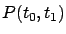
as a function of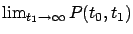
exists (under the additional assumption of controllability) and has some interesting properties. This path will eventually lead us to a complete solution of the infinite-horizon LQR problem.MONOTONICITY. It is not hard to see that the finite-horizon optimal cost
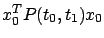
is a monotonically nondecreasing function of the final time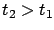
. Using (6.25), the definition of the value function, and the standing assumptions that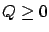
and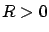
, we have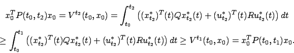
BOUNDEDNESS. It is not true in general that the optimal cost remains bounded as
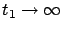
. For example, if the system is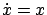
(no control) then its solutions are growing exponentials and the infinite-horizon cost is clearly unbounded. However, we now show that the finite-horizon optimal cost remains bounded as assuming that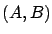
is a controllable pair. Indeed, controllability guarantees the existence of a time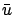
that steers the state from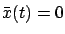
for all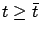
, and we have
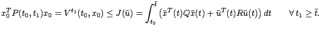
Since the above integral does not depend on
![[*]](crossref.gif) where its necessity will be re-examined).
where its necessity will be re-examined).
EXISTENCE OF THE LIMIT. From the previous two claims it immediately follows that
has a limit as
.
It turns out that more is true, namely,
the matrix
is well defined. To see why, let us consider some specific initial conditions  (we can do this because all the facts established so far are valid for arbitrary
(we can do this because all the facts established so far are valid for arbitrary  ). First, let
). First, let
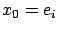
with for some
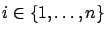
. Then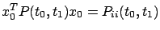
, implying that each diagonal entry of has a limit as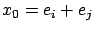
for some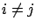
. Recalling that is symmetric (Exercise 6.2), we have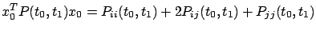
, from which we can deduce that the off-diagonal entries of converge as well. We can think of as the solution of the RDE (6.14) that, starting from the zero matrix, has flown backward for infinite time and reached steady state; Figure 6.1 should help visualize this situation.
PROPERTIES OF THE LIMIT. Since the RDE (6.14) is now a time-invariant differential equation, its solution actually depends only on the difference
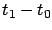
. Thus it is clear that the steady-state solution , whose existence we just established, does not depend on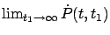
must also exist and be a constant matrix, which must then necessarily be the zero matrix. We thus conclude that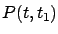
for each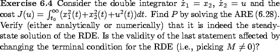